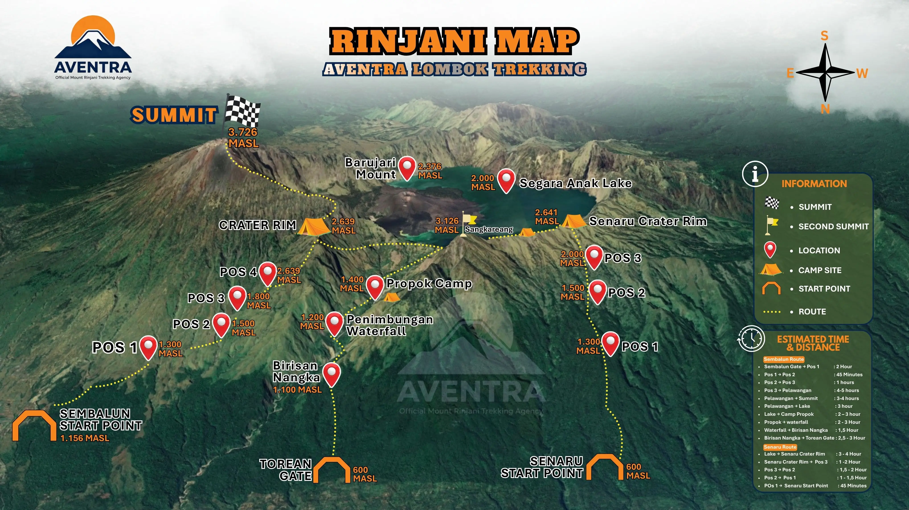

The key places on the map
Mount Rinjani is a huge volcano with a caldera in the middle. Most treks climb to one of the crater rims, drop into the caldera to the lake, or push on to the summit. All heights are in metres above sea level, as shown on the map.
Summit of Rinjani
3,726 m
The highest point, reached from the Sembalun crater rim in 3–4 hours. Most trekkers start around 2:30 am to arrive for sunrise.
Sangkareang
Second summit · 3,126 m
The second-highest peak on the crater wall, between the Sembalun and Senaru sides.
Sembalun Crater Rim
Pelawangan Sembalun · 2,639 m
Base camp for the summit attack, with tents facing the sunset over the lake.
Senaru Crater Rim
Pelawangan Senaru · 2,641 m
Campsite on the northern rim with the best views over the lake and Barujari.
Segara Anak Lake
2,000 m
The crater lake inside the caldera, with natural hot springs nearby.
Barujari
2,376 m
The young volcano rising from the lake — the cone you see in every crater photo.
Propok Camp
1,400 m
Campsite on the Torean route below the lake.
Penimbungan Waterfall
1,200 m
A highlight of the Torean route, in the deep valley below Propok.
Birisan Nangka
1,100 m
The last landmark on the Torean route before the gate.
The routes and walking times
The national park has six official routes: Senaru and Torean in North Lombok; Sembalun, Timbanuh and Tetebatu in East Lombok; and Aik Berik in Central Lombok. Our map shows the three routes our treks use. Walking times are estimates from our guides and depend on your pace and the weather. The quiet Setampol route, which starts near Bayan, is not drawn on this map.
Sembalun route — to the summit
- Sembalun start point (1,156 m) → Pos 1 (1,300 m)2 hours
- Pos 1 → Pos 2 (1,500 m)45 minutes
- Pos 2 → Pos 3 (1,800 m)1 hour
- Pos 3 → Pos 4 → Sembalun crater rim (2,639 m)4–5 hours
- Crater rim → Summit (3,726 m)3–4 hours
- Crater rim → Segara Anak Lake3 hours
Open savanna with little shade. The steep last section to the rim is known as the “Hill of Regret”.
Senaru route — through the rainforest
- Segara Anak Lake → Senaru crater rim (2,641 m)3–4 hours
- Crater rim → Pos 3 (2,000 m)1–2 hours
- Pos 3 → Pos 2 (1,500 m)1.5–2 hours
- Pos 2 → Pos 1 (1,300 m)1–1.5 hours
- Pos 1 → Senaru start point (600 m)45 minutes
Times shown going down. Cool and shady forest, with monkeys along the trail.
Torean route — the canyon exit
- Segara Anak Lake → Propok Camp (1,400 m)2–3 hours
- Propok → Penimbungan Waterfall (1,200 m)2–3 hours
- Waterfall → Birisan Nangka (1,100 m)1.5 hours
- Birisan Nangka → Torean Gate (600 m)2.5–3 hours
A wild, rocky descent through a deep valley, past waterfalls and cliffs.
Which trek follows which route?
Find your trek on the map: where it starts, its highest point, and where you finish. Prices are Trek Only, per person, sharing group.
| Trek | Start | Highest point | Finish | From |
|---|---|---|---|---|
| 2D1N Summit | Sembalun | Summit 3,726 m | Sembalun | $120 |
| 2D1N Senaru Crater Rim | Senaru | Senaru crater rim 2,641 m | Senaru | $119 |
| 2D1N Setampol Green Summit | Bayan | Setampol rim 2,608 m | Bayan | Ask us |
| 3D2N Summit & Lake | Sembalun | Summit 3,726 m | Senaru | $135 |
| 3D2N Senaru – Sembalun | Senaru | Summit 3,726 m | Sembalun | $134 |
| 3D2N Sembalun – Torean | Sembalun | Summit 3,726 m | Torean | $136 |
| 4D3N Complete | Sembalun | Summit 3,726 m | Senaru | $145 |
Want transport and a hotel night too? See the All-Inclusive prices.
More route guides
Not sure which route is right for you?
Tell us your fitness, your dates and how many days you have — we'll suggest the best trek.
Ask us on WhatsApp